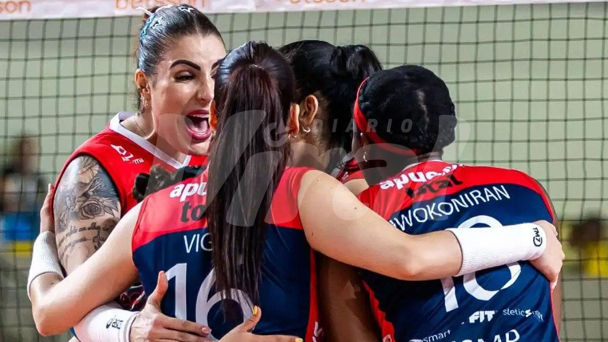
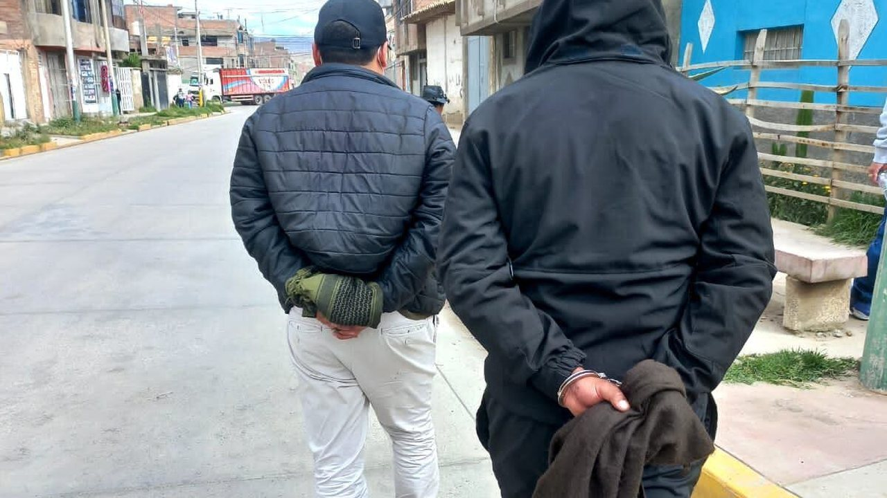

Según estimaciones de La Tercera, la operación estaría valorizada entre US1,540 dólares millones y US1,848 dólares millones, equivalentes a cinco o seis veces el Ebitda de 2025 de Entel Perú (US308 dólares millones).






Según estimaciones de La Tercera, la operación estaría valorizada entre US1,540 dólares millones y US1,848 dólares millones, equivalentes a cinco o seis veces el Ebitda de 2025 de Entel Perú (US308 dólares millones).
Génesis Tapia revela otro episodio de celos de Luiggi con Florcita: “Si no me conecto cada cinco minutos, él se molesta” ¿Todavía ama a Florcita? Florcita Polo rechazó que el chat presentado por Luiggi Yarasca desmienta su acusación de haber sido empujada por las escaleras.
La aerolínea española Plus Ultra anunció la suspensión de sus vuelos entre Lima y Madrid desde este martes 17 de noviembre de 2026. En su comunicado oficial, la aerolínea precisó que la suspensión de la ruta a Lima comienza el 17 de noviembre y no tiene, por el momento, una fecha anunciada de reanudación.
¡El Perú sigue destacando en el vóley playa! Las deportistas nacionales Lisbeth Allca y Claudia Gaona conquistaron la medalla de plata en la segunda fecha del Circuito Sudamericano de Vóley Playa, disputada en Cayena, capital de Guayana Francesa, donde demostraron su gran nivel competitivo al ganar cinco de los seis partidos que…
Henry Porras, secretario del Sindicato Único de Trabajadores de la UNSA (SUTUNSA), señaló que los artículos cuestionados permitirían al MEF revisar y aprobar obligatoriamente los acuerdos alcanzados entre sindicatos y entidades públicas.
El reconocimiento se realizó en el marco de las celebraciones por los 35 años de vida institucional de la universidad y convirtió al jurista tunecino en el Nobel número 14 en recibir esta distinción.
La Coordinadora Gremial de Transportistas de Carga del Perú acata el segundo día de un paro de transporte de 72 horas convocado para los días 16, 17 y 18 de noviembre.
El exdelantero internacional inglés Wayne Rooney, que desde muy joven se vio expuesto a una fuerte presión mediática, admitió en un pódcast este martes que durante su etapa de jugador del Manchester United llegó a tener pensamientos suicidas.
¿CUÁNTOS CAPÍTULOS TIENE LA TEMPORADA 6 DE “THE CHOSEN”? La temporada 6 de “The Chosen” arrancó el pasado domingo 15 de noviembre del 2026 con un triple lanzamiento. Por lo tanto, los seguidores de “The Chosen” podrán ser testigos de este importante acontecimiento en pantalla grande.
Cada edición dura menos de dos minutos. En la web tienes el resumen de cada historia y el enlace directo al medio original para leerla completa.
Conoce Olfatecho →